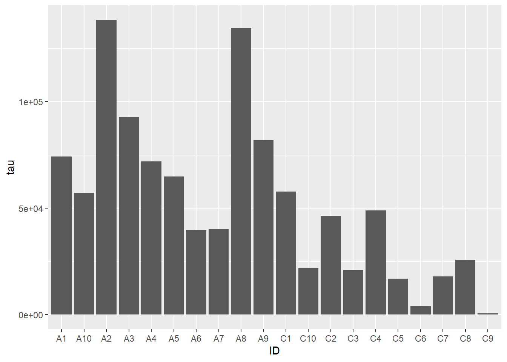
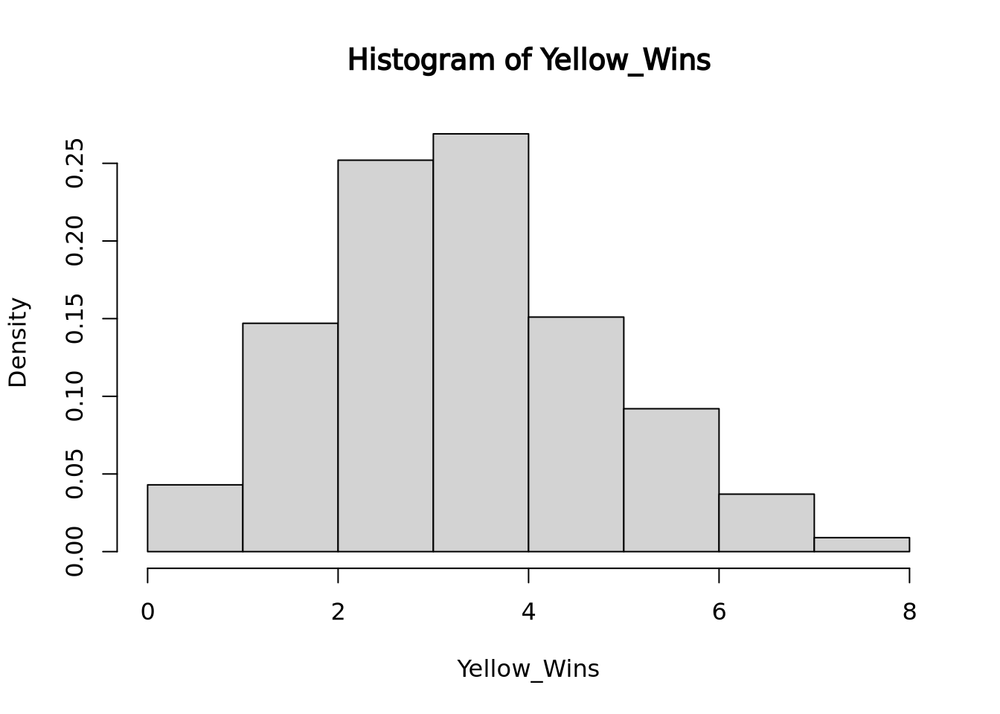
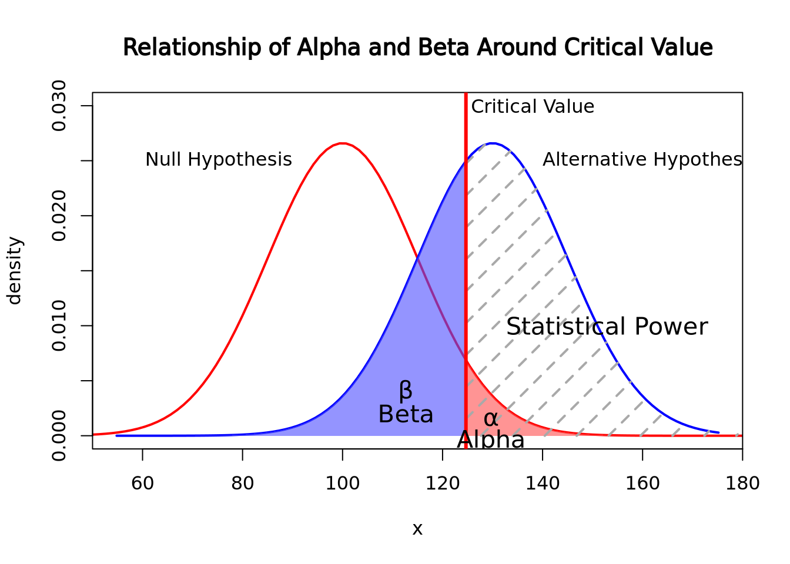
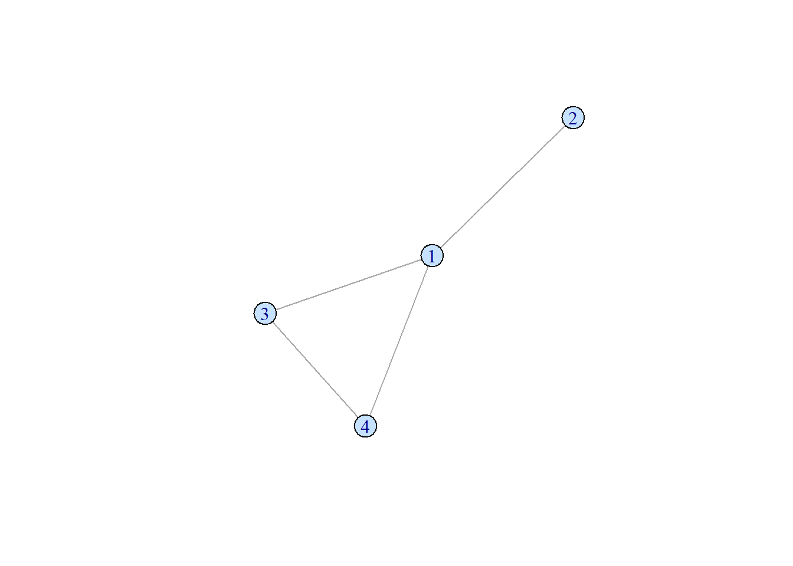
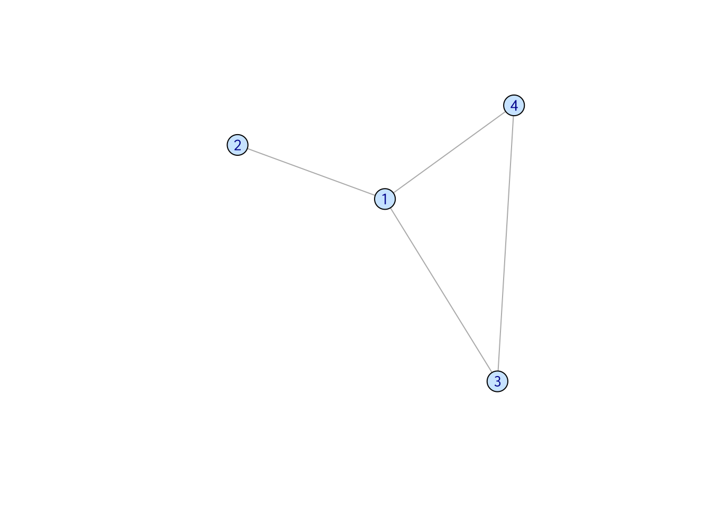
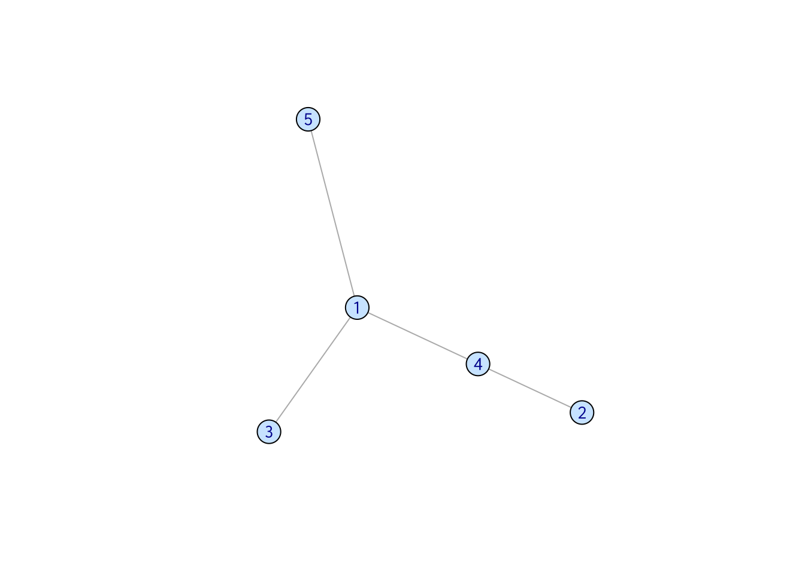
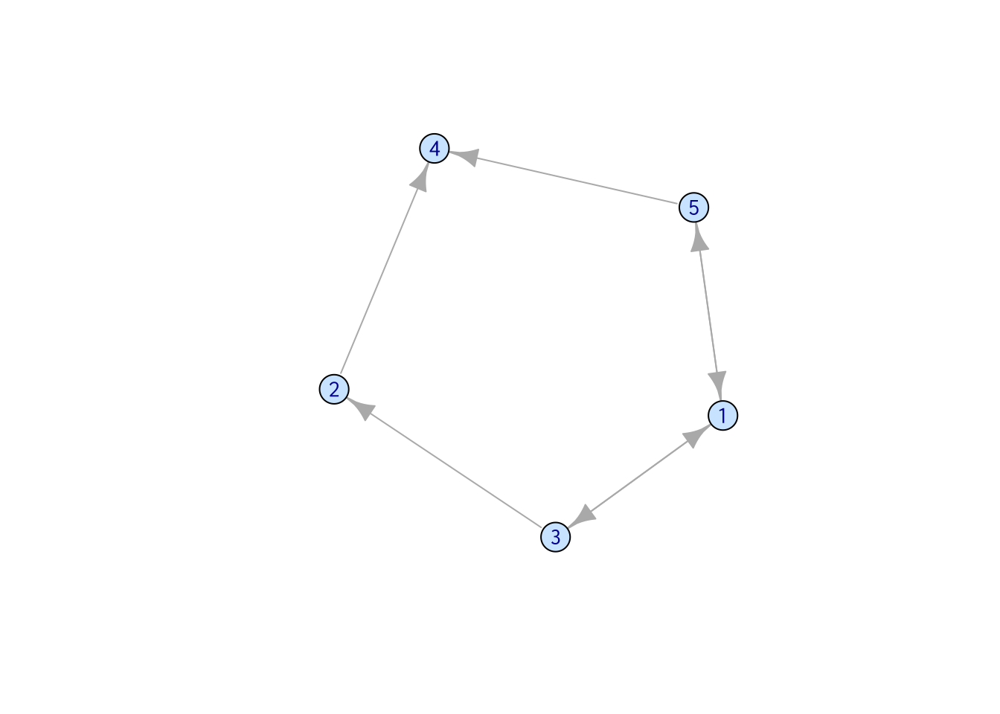
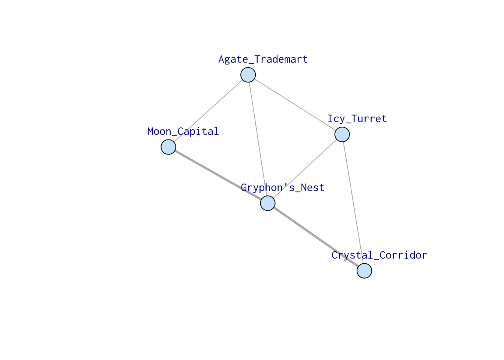
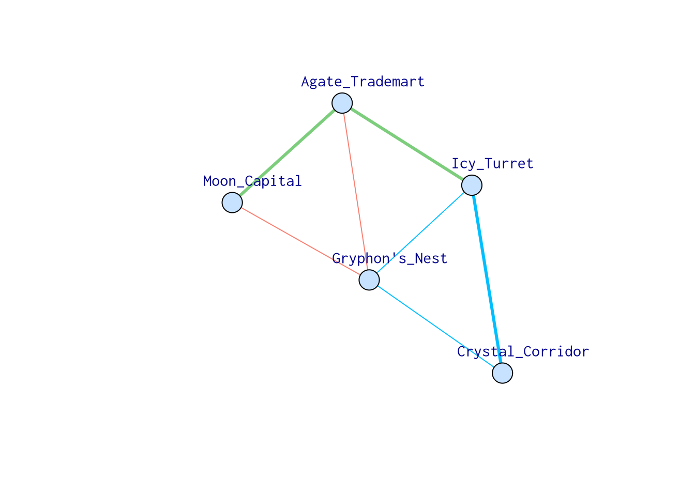

7 Data Visualization
Data visualization is a core component of both exploring data and communicating results to others. The goal of data visualization is to present data in a graphical way that shows the reader patterns that would not otherwise be visible. Despite its ubiquity and importance, effective data visualization is challenging, and while many tools and approaches exist there is no “gold standard” to follow in any meaningful sense. Rather, an effective visualization has the following properties:
- Depicts accurate data
- Depicts data accurately
- Shows enough, but not too much, of the data for the viewer to gain insight
- Is self contained - no additional information (except a caption) is required to understand the contents of the figure
Beyond these, a great visualization has some additional properties:
- Exposes patterns in the data not easily observable by other methods
- Invites the viewer to ask more questions about the data
7.1 Grammar of Graphics
The grammar of graphics is a system of rules that describes how data and graphical aesthetics (e.g. color, size, shape, etc) are combined to form graphics and plots. First popularized in the book The Grammar of Graphics by Leland Wilkinson and co-authors in 1999, this grammar is a major contribution to the structural theory of statistical graphics. In 2005, Hadley Wickam wrote an implementation of the grammar of graphics in R called ggplot2 (gg stands for grammar of graphics).
Under the grammar of graphics, every plot is the combination of three types of information: data, geometry, and aesthetics. Data is the data we wish to plot. Geometry is the type of geometry we wish to use to depict the data (e.g. circles, squares, lines, etc). Aesthetics connect the data to the geometry and defines how the data controls the way the selected geometry looks.
A simple example will help to explain. Consider the following made up sample metadata tibble for a study of subjects who died with Alzheimer’s Disease (AD) and neuropathologically normal controls:
ad_metadata## # A tibble: 20 x 8
## ID age_at_death condition tau abeta iba1 gfap braak_stage
## <chr> <dbl> <fct> <dbl> <dbl> <dbl> <dbl> <fct>
## 1 A1 81 AD 74165 35842 11761 129300 3
## 2 A2 82 AD 138292 171416 83640 42844 6
## 3 A3 80 AD 92759 60277 120280 41222 4
## 4 A4 66 AD 71894 47856 67188 32846 3
## 5 A5 75 AD 64910 153513 111125 120407 3
## 6 A6 70 AD 39788 52851 33094 43674 2
## 7 A7 84 AD 39993 81023 36641 79634 2
## 8 A8 85 AD 134645 290511 41510 25664 6
## 9 A9 73 AD 82030 285705 70156 42536 4
## 10 A10 80 AD 57169 83868 28670 31079 2
## 11 C1 76 Control 57708 45956 46536 100924 2
## 12 C2 78 Control 46347 12586 27588 76055 2
## 13 C3 67 Control 20955 22866 11881 107339 1
## 14 C4 86 Control 48941 7898 66129 92690 2
## 15 C5 73 Control 16914 20748 15493 131424 1
## 16 C6 83 Control 3878 4489 2416 70401 0
## 17 C7 76 Control 17960 14331 17473 54470 1
## 18 C8 76 Control 25712 46254 17499 142991 1
## 19 C9 68 Control 651 595 601 135552 0
## 20 C10 90 Control 21876 60531 39058 76933 1For context, tau protein and amyloid beta peptides from the amyloid precursor protein aggregate into neurofibrillary tangles and A-beta plaques, respectively, the brains of people with AD. Generally, the amount of both of these pathologies is associated with more severe disease. Braak stage is a neuropathological assessment of the amount of pathology in a brain that is associated with the severity of disease, where 0 indicates absence of pathology and 6 with widespread involvement in multiple brain regions. Aggregation of tau is also a consequence of normal aging, so must accompany neurological symptoms such as dementia to indicate an AD diagnosis post mortem. Note we have control samples as well as AD.

Tauopathy: tau protein accumulates in the cell bodies of affected neurons - Wikipedia
The histology measures tau, abeta, iba1, and gfap have been quantified
using digital microscopy, where brain sections are stained with
immunohistochemistry to identify the location and degree of pathology; the
measures in the table are the number of pixels of a 400 x 400 pixel image of a
piece of brain tissue that fluoresce when stained with the corresponding
antibody. Tau and A-beta antibodies are specialized to the types of aggregated
proteins mentioned above and provide a quantification of the level of overall
AD pathology. Ionized calcium binding adaptor molecule 1 (IBA1) is a marker of
activated microglia, the resident
macrophages of the brain, which is an
indication of neuroinflammation. Glial fibrillary acidic protein (GFAP) is a
marker for activated astrocytes,
specialized cells that derive from the neuron lineage, are critical for
maintaining the blood brain
barrier, and are also
involved in the neuroinflammatory response.
Let’s say we wished to visualize the relationship between age at death and the
amount of tau pathology. A scatter plot where each marker is a subject with \(x\)
and \(y\) position corresponding to age_at_death and tau respectively. The
following R code creates such a plot with ggplot2:
ggplot(data=ad_metadata, mapping = aes(x = age_at_death, y=tau)) +
geom_point()All ggplot2 plots begin with the ggplot() function call, which is passed a
tibble with the data to be plotted. We then define the aesthetics are
defined by mapping the x coordinate to the age_at_death column and the y
coordinate to the tau column with aes(x = age_at_death, y=tau). Finally, the
geometry as ‘point’ with geom_point(), meaning marks will be made at pairs
of x,y coordinates. The plot shows what we expect given our knowledge of the
relationship between age and amount of tau; the two look to be positively
correlated.
However, we are not capturing the whole story: we know that there are both AD
and Control subjects in this dataset. How does condition relate to this
relationship we see? We can layer on an additional aesthetic of color to add
this information to the plot:
ggplot(data=ad_metadata, mapping = aes(x = age_at_death, y=tau, color=condition)) +
geom_point()This looks a little clearer, showing that Control subjects generally have both an earlier age at death and a lower amount of tau pathology. This might be a problem, however, since if the age distributions of AD and Control groups are different that might pose a problem with confounding. We should investigate this.
Instead of plotting age at death and tau against each other, we will examine the
distributions of each of these variables for AD and Control samples separately.
We will use the violin
geometry with
geom_violin() to look at the distributions of age_at_death:
ggplot(data=ad_metadata, mapping = aes(x=condition, y=age_at_death)) +
geom_violin()
We can see immediately that there are big differences between the age distributions of the two groups. This is not ideal, but perhaps we can adjust for these effects in downstream analyses. We’d like to look at the tau distributions as well, but it would be nice to have these two plots side by side in the same plot. To do that, we will use another library called patchwork, which allows independent ggplot2 plots to be arranged together with a simple expressive syntax:
library(patchwork)
age_boxplot <- ggplot(data=ad_metadata, mapping = aes(x=condition, y=age_at_death)) +
geom_boxplot()
tau_boxplot <- ggplot(data=ad_metadata, mapping=aes(x=condition, y=tau)) +
geom_boxplot()
age_boxplot | tau_boxplot # this puts the plots side by sideThis confirms our suspicion, and also reveals a serious problem with our samples: we have strong confounding of tau and age at death between AD and Control samples. This means that if we look for differences between AD and Control, we won’t know if the difference is due to the amount of tau pathology or due to age of the subjects. With this sample set, we simply cannot confidently answer that question. Just a few simple plots alerted us to this problem; hopefully more expensive datasets have not already been generated for these samples, so that hopefully different subjects are available that could avoid this confounding.
This has been a biological data analysis oriented tutorial on plotting meant to illustrate the principles of the grammar of graphics. Namely, every plot has data, geometry, and aesthetics that can be independently controlled to produce many types of plots. Many of these plots have names, like scatter plots and boxplots, but as you compose different types of geometries and aesthetics together you may find yourself generating plots that aren’t so easily named.
The next sections of this chapter are a kind of “cook book” of different kinds plots you can generate with data of different shapes. It is not intended to be comprehensive, but a helpful guide when you are trying to decide how to visualize your own datasets.
If you want to go directly to the comprehensive documentation of the many types of ggplot2 plots, peruse the R Graph Gallery site.
7.2 Plotting One Dimension
The simplest plots involve plotting a single vector of numbers, or several such
vectors (e.g. for different samples). Each value in the vector typically
corresponds to a category or fixed value, for example the tau column from the
example above has pairs of (ID, tau value). The order of these numbers can be
changed, but the vector remains one dimensional or 1-D.
7.2.1 Bar chart
Bar charts map length (i.e. the height or width of a box) to the scalar value of a number. The difference in visual length can help the viewer notice consistent patterns in groups of bars, depending on how they are arranged:
ggplot(ad_metadata, mapping = aes(x=ID,y=tau)) +
geom_bar(stat="identity")
Note the stat="identity" argument is required because by default geom_bar
counts the number of values for each value of x, which in our case is only ever
one. This plot is not particularly helpful, so let’s change the fill color of
the bars based on condition:
ggplot(ad_metadata, mapping = aes(x=ID,y=tau,fill=condition)) +
geom_bar(stat="identity")Slightly better, but maybe we can see even more clearly if we sort our tibble by tau first. Sorting elements in these 1-D charts is somewhat complicated, and is explained in the [Reordering 1-D Data Elements] section below.
Bar charts can also plot negative numbers. In the following example, we center the tau measurements by subtracting the mean from each value before plotting:
mutate(ad_metadata, tau_centered=(tau - mean(tau))) %>%
ggplot(mapping = aes(x=ID, y=tau_centered, fill=condition)) +
geom_bar(stat="identity")7.2.2 Lollipop plots
Similar to bar charts, so-called “lollipop plots” replace the bar with a line segment and a circle. The length of the line segment is proportional to the magnitude of the number, and the point marks the length of the segment as a height on the y or length on the x axis, depending on orientation.
ggplot(ad_metadata) +
geom_point(mapping=aes(x=ID, y=tau)) +
geom_segment(mapping=aes(x=ID, xend=ID, y=0, yend=tau))
Note that aes() mappings can be made on the ggplot() object or on each
individual geometry function call, to specify different mappings based on
geometry.
7.2.3 Stacked Area charts
Stacked area charts can visualize multiple 1D data that share a common categorical axis. The charts consist of one line per variable with vertices that correspond to x and y values similar to a bar or lollipop plots. Each variable is plotted using the previous one as a baseline, so that the height of the data points for each category is proportional to their sum. The space between the lines for each variable and the previous one are filled with a color. The following plot visualizes the amount of marker stain for each of the four genes for each individaul:
pivot_longer(
ad_metadata,
c(tau,abeta,iba1,gfap),
names_to='Marker',
values_to='Intensity'
) %>%
ggplot(aes(x=ID,y=Intensity,group=Marker,fill=Marker)) +
geom_area()
We notice that subject A4 has the highest overall level of marker intensity,
followed by A1, A7, etc. The control samples overall have less intensity across
all markers. Certain samples, A2 and C5, have little to no abeta aggregation,
and C6 has little to no tau.
Stacked area plots require three pieces of data:
- x - a numeric or categorical axis for vertical alignment
- y - a numeric axis to draw vertical proportions
- group - a categorical variable that indicates which (x,y) pairs correspond to the same line
In the example above, we needed to pivot our tibble so that the different
markers and their values were placed into columns Marker and Intensity,
respectively. Data for stacked bar charts will usually need to be in this ‘long’
format, as described in Rearranging Data.
Sometimes it is more helpful to view the relative proportion of values in each category rather than the actual values. The result is called a proportional stacked area plots. While not a distinct plot type, we can create one by preprocessing our data by dividing each value by the column sum:
pivot_longer(
ad_metadata,
c(tau,abeta,iba1,gfap),
names_to='Marker',
values_to='Intensity'
) %>%
group_by(ID) %>% # we want to divide each subjects intensity values by the sum of all four markers
mutate(
`Relative Intensity`=Intensity/sum(Intensity)
) %>%
ungroup() %>% # ungroup restores the tibble to its original number of rows after the transformation
ggplot(aes(x=ID,y=`Relative Intensity`,group=Marker,fill=Marker)) +
geom_area() Now the values for each subject have been normalized to each sum to 1. In this
way, we might note that the relative proportion of
Now the values for each subject have been normalized to each sum to 1. In this
way, we might note that the relative proportion of abeta seems to be greater
in AD samples than Controls, but that may not be true of tau. These
observations may inspire us to ask these questions more rigorously than we have
done so far by inspection.
7.2.4 Parallel Coordinate plots
7.3 Visualizing Distributions
The distribution is one of the most important properties of a set of numbers. A distribution describes the general “shape” of the numbers, i.e. what is the relative frequency of the values, or ranges of values, within the data. Understanding the distribution of a data set is critical when choosing methods to apply, since many methods are only appropriate when data is distributed in certain ways, e.g. linear regression assumes the response variable is normally distributed, otherwise the result of the model cannot be interpreted properly. Often, we don’t know how our data are distributed when we obtain it and so we must examine the distribution empirically. The visualizations in this section are all used for the purpose of depicting the distribution of a set of numbers.
7.3.1 Histogram
The most common way to plot the distribution of a 1-D set of data is the
histogram. The histogram divides up
the range of a dataset from minimum to maximum into bins usually of the same
width and tabulates the number of values that fall within each bin. Below is a
histogram of our age_at_death measurement for all samples:
ggplot(ad_metadata) +
geom_histogram(mapping=aes(x=age_at_death))
Note that the histogram does not look very complete, because there are only 20 values in our data. We can mitigate this somewhat by increasing the number of bins the data range is divided into:
ggplot(ad_metadata) +
geom_histogram(mapping=aes(x=age_at_death),bins=10)
This is a little bit better, but there are still some bins (76-79, 84-87) that have no values. Compare this to the following synthetic dataset of 1000 normally distributed values:
tibble(
x=rnorm(1000)
) %>%
ggplot() +
geom_histogram(aes(x=x))
For distributions with a small number of samples, histograms might not be the best visualization. We will continue with synthetic normally distributed dataset for the remaining examples.
ggplot allows you to easily plot multiple distributions on the same plot:
tibble(
x=c(rnorm(1000),rnorm(1000,mean=4)),
type=c(rep('A',1000),rep('B',1000))
) %>%
ggplot(aes(x=x,fill=type)) +
geom_histogram(bins=30, alpha=0.6, position="identity")
The alpha=0.6, position="identity" arguments makes the bars partially
transparent so you can see the overlap more clearly.
7.3.2 Density
Another way to describe a distribution is with a density plot. Instead of binning the values into intervals and drawing bars with height proportional to the number of values in each bin, a density plot draws a smoothly interpolated line that approximates the distribution instead. A key difference between a histogram and a density plot is the density plot is always normalized so the integral under the curve is approximately 1, whereas a histogram may be either counts or, if the counts in each bin are divided by the total number of data points, a proportion.
Compare the histogram and density plots
of the age_at_death variable from our example tibble:
library(patchwork)
hist_g <- ggplot(ad_metadata) +
geom_histogram(mapping=aes(x=age_at_death),bins=30)
density_g <- ggplot(ad_metadata) +
geom_density(mapping=aes(x=age_at_death),fill="#c9a13daa")
hist_g | density_g
Notice the overall shape of the two distributions is similar, with the highest values in both around age 77. The density plot is a smoother representation of a histogram, but its accuracy is still highly sensitive to the number of measurements used to construct it. Compare the histogram and density plots of two sets of 1000 normally distributed samples with different means:
library(patchwork)
normal_samples <- tibble(
x=c(rnorm(1000),rnorm(1000,mean=4)),
type=c(rep('A',1000),rep('B',1000))
)
hist_g <- ggplot(normal_samples) +
geom_histogram(
mapping=aes(x=x,fill=type),
alpha=0.6,
position="identity",
bins=30
)
density_g <- ggplot(normal_samples) +
geom_density(
mapping=aes(x=x,fill=type),
alpha=0.6,
position="identity"
)
hist_g | density_gAgain the two types of plots depict similar distributions, although they are different enough to possibly suggest different interpretations. In general, density plots might be preferable over histograms if the data are noisy or sparse in that they produce cleaner plots, but potentially at the expense of accuracy when the number of samples is low.
7.3.3 Boxplot
Box plots, or box and whisker plots, are extremely common when used to describe distributions. Below is a boxplot of age at death divided by condition:
ggplot(ad_metadata) +
geom_boxplot(mapping=aes(x=condition,y=age_at_death))
Boxplots are drawn assuming the data are unimodal (i.e. shaped like a hill, possibly slanted to one side or the other), where the extents of the box represent the 1st and 3rd quartile of the data, the central line is the median, the whiskers are drawn as 1.5 times the value outside the 1st and 3rd quartiles. Sometimes individual values more extreme than the whiskers are drawn individually to identify them as outliers.

Boxplot anatomy. IQR stands for “inner quartile range,” the distance between the 1st and 3rd quartile - Wikipedia
However, boxplots have some significant shortcomings. Primarily, the rectangle of the inner quartile range does not describe the actual distribution of the samples within it. Although the median can give a sense of skewness, if the data are not unimodal this may be misleading. Consider the following distributions plotted as boxplots or as violin plots (described in the next section):
library(patchwork)
normal_samples <- tibble(
x=c(rnorm(1000),rnorm(1000,4),rnorm(1000,2,3)),
type=c(rep('A',2000),rep('B',1000))
)
g <- ggplot(normal_samples, aes(x=type,y=x,fill=type))
boxplot_g <- g + geom_boxplot()
violin_g <- g + geom_violin()
boxplot_g | violin_g
The two distributions look almost identical in the boxplot figure; however they are dramatically different when visualized using a method like a violin plot where the contours of the entire distribution are depicted. Unless you are certain that your data are unimodal, one of the other distribution visualization methods in this section will likely more accurately depict your data than a boxplot.
7.3.4 Violin plot
As seen in the last section, a violin
plot is another way
to depict a distribution by producing a shape where the width is proportional to
the value along the x or y axis, depending on orientation. The “violin” shape is
similar in principle to a histogram or a density plot, in that it describes the
contour of all the data in the distribution, not just the quantiles and extents,
as in a box plot. Below is a violin plot of the tau measures from our example
tibble:
ggplot(ad_metadata) +
geom_violin(aes(x=condition,y=tau,fill=condition))
The violin plot is both more and less descriptive than a boxplot; it does depict the entire distribution of the data, but also doesn’t include features like median by default.
7.3.5 Beeswarm plot
The beeswarm plot is similar to a violin plot, but instead of plotting the contours of the data, it plots the data itself as points like in a scatter plot. The individual values of the distribution are organized vertically and spaced such that the points don’t overlap. In this plot, the distribution of age at death is plotted for each kind of sample and the markers are colored by the amount of tau:
library(ggbeeswarm)
ggplot(ad_metadata) +
geom_beeswarm(aes(x=condition,y=age_at_death,color=condition),cex=2,size=2)
We may not have noticed before that our AD samples have a big gap in ages between 74 and 81; since the beeswarm plot displays all the data, we can see it easily here.
Beeswarm plots are typically only useful when the number of values is within a range; not too many and not too few. The example above is close to having too few values per group for this plot to be useful, but consider the following with too many samples:
normal_samples <- tibble(
x=c(rnorm(1000),rnorm(1000,4),rnorm(1000,2,3)),
type=c(rep('A',2000),rep('B',1000))
)
ggplot(normal_samples, aes(x=type,y=x,color=type)) +
geom_beeswarm()
This plot likely has too many samples to be the right choice (it’s also ugly), but it does give an idea of the distribution of the data.
In the previous examples the markers for each group also determined the color of the group. This makes the chart a bit easier to read and more pleasing to the eye, but is technically redundant. You can use however profitably however to color markers by some other value that might be of interest. Consider this final example where markers are colored by another randomly generated variable:
normal_samples <- tibble(
x=c(rnorm(100),rnorm(100,4),rnorm(100,2,3)),
type=c(rep('A',200),rep('B',100)),
category=sample(c('healthy','disease'),300,replace=TRUE)
)
ggplot(normal_samples, aes(x=type,y=x,color=category)) +
geom_beeswarm()We are now effectively visualizing three dimensions which may provide insight into the data.
7.3.6 Ridgeline
If you have many non-trivial distributions that you would like the user to compare, a good option is a ridgeline chart. The ridgeline plot is simply multiple density plots drawn for different variables within the same plot. Like the beeswarm plot, ridgeline plots are provided by another package outside ggplot2.
library(ggridges)
tibble(
x=c(rnorm(100),rnorm(100,4),rnorm(100,2,3)),
type=c(rep('A',200),rep('B',100)),
) %>%
ggplot(aes(y=type,x=x,fill=type)) +
geom_density_ridges()
Many distributions may be plotted:
tibble(
x=rnorm(10000,mean=runif(10,1,10),sd=runif(2,1,4)),
type=rep(c("A","B","C","D","E","F","G","H","I","J"),1000)
) %>%
ggplot(aes(y=type,x=x,fill=type)) +
geom_density_ridges(alpha=0.6,position="identity")7.4 Plotting Two or More Dimensions .
7.4.1 Scatter plot .
7.4.2 Line plot .
ggplot(ad_metadata,mapping=aes(x=abeta, y=tau)) +
geom_line()pivot_longer(ad_metadata,
c(tau,abeta,iba1,gfap),
names_to='Marker',
values_to='Intensity'
) %>%
ggplot(ad_metadata,mapping=aes(x=ID, y=Intensity, group=Marker, color=Marker)) +
geom_line()7.4.3 Bubble plot .
7.4.4 Heatmaps
Heatmaps visualize values associated with a grid of points \((x,y,z)\) as a grid of colored rectangles, where \(x\) and \(y\) define the grid point coordinates and \(z\) is a continuous value. A common heatmap you might have seen is the weather map, which plots current or predicted weather patterns on top of a geographic map:

Weather maps are heatmaps
The color at each grid coordinate, which in this case are spaced closely enough so we cannot distinguish the boundaries between the rectangles without zooming in, is proportional to the type and intensity of weather at that location. In the weather map, the weather values are mapped to a color scales that describe the amount of precipitation as shown in the map legend.
In biology, heatmaps are more typically used to visualize matrices. The concept is the same as with the weather map, except instead of geographic coordinates the grid corresponds to the rows and columns of a data matrix, and the color of each grid point is mapped to a color scale chosen by the designer. The grid of rectangles is typically not overlayed over anything, as in the weather map, but is instead the entire visualization.
We can create heatmap in R using the base R
heatmap()
function. Below is a heatmap visualization of our histological markers from the
AD example:
# heatmap() requires a R matrix, and cannot accept a tibble or a dataframe
marker_matrix <- as.matrix(
dplyr::select(ad_metadata,c(tau,abeta,iba1,gfap))
)
# rownames of the matrix become y labels
rownames(marker_matrix) <- ad_metadata$ID
heatmap(marker_matrix)
The lower right portion of the plot is the heatmap, where the matrix values are visualized on a color gradient from light yellow to dark red.
More precisely, the heatmap() function creates a clustered heatmap, where
the rows and columns have been hierarchically
clustered separately and ordered according to how
similar they are to one another. The left and top line diagrams are
dendrograms, which depict the similarity between rows and
columns as a tree, where the total branch length summed from one row/column to
another is proportional to the dissimilarity (i.e. numeric distance) of the two.
The base R heatmap() function performs many different operations on the input
matrix than just draw a grid of rectangles in proportion to the values. By
default, it also:
- performs hierarchical clustering of the rows and columns using a Euclidean distance function and orders them accordingly
- draws dendrograms on the rows and columns according to the clustering
- scales the data in the rows to have mean zero and standard deviation 1
Each of these defaults can be changed by passing arguments into the function call. The following turns off all of the extra functionality and produces only a heatmap of the matrix:
heatmap(
marker_matrix,
Rowv=NA,
Colv=NA,
scale="none",
) Note how the colors in this heatmap are very different for many of the
marker/sample pairs. This illustrates some of the dangers of using heatmaps,
which are described more fully in the [How To Use Heatmaps Responsibly] section
below.
Note how the colors in this heatmap are very different for many of the
marker/sample pairs. This illustrates some of the dangers of using heatmaps,
which are described more fully in the [How To Use Heatmaps Responsibly] section
below.
The base R heatmap function has the major drawback that no color key is provided
to indicate how values map to colors. Another heatmap
heatmap.2
function in the gplots package
which has a similar interface to heatmap(), but allows provides more
parameters to control the behavior of the plot and includes a color key:
library(gplots)
heatmap.2(marker_matrix)
The extra decoration (dashed and solid vertical lines called traces by the
package) provide another way to understand the magnitude of the value in each
cell. Refer to the gplots documentation of
heatmap2
for more information on how to interpret the trace (hint: you may turn it off
with by passing the argument trace = "none" to the function call).
Both heatmap() and heatmap.2() provide a useful method to annotate rows and
columns with a categorical variable. Each of our subjects either has AD or is a
control, and we can add a color bar along the margin of the plot to indicate the
status of each subject:
condition_colors <-
transmute(
ad_metadata,
color=if_else(condition == "AD","red","blue")
)
heatmap(
marker_matrix,
RowSideColors=condition_colors$color
)
And with heatmap.2:
heatmap.2(
marker_matrix,
RowSideColors=condition_colors$color
)
Heatmaps may also be created using ggplot and the
geom_tile geometry.
This method of generating heatmaps is more “manual” than the other functions
covered so far, and so are both flexible and require more work to obtain certain
functionality (e.g. clustering, color bars on side margins, etc). This geometry
requires the data to be in long format, with one column for x, y, and z
values:
pivot_longer(
ad_metadata,
c(tau,abeta,iba1,gfap),
names_to="Marker",
values_to="Intensity"
) %>%
ggplot(aes(x=Marker,y=ID,fill=Intensity)) +
geom_tile()
Note this ggplot method does not scale or reorder rows or columns.
7.4.4.1 Specifying Heatmap Colors
The colors of the heatmap may be changed by passing one of the native color
palettes
to the heatmap function with the col argument:
# native R colors are:
# - rainbow(n, start=.7, end=.1)
# - heat.colors(n)
# - terrain.colors(n)
# - topo.colors(n)
# - cm.colors(n)
# the n argument specifies the number of colors (i.e. resolution) of the colormap to return
heatmap(marker_matrix,col=cm.colors(256))
To change the color using ggplot and geom_tile(), use the
scale_fill_gradientn
function to specify a different color palette:
pivot_longer(
ad_metadata,
c(tau,abeta,iba1,gfap),
names_to="Marker",
values_to="Intensity"
) %>%
ggplot(aes(x=Marker,y=ID,fill=Intensity)) +
geom_tile() +
scale_fill_gradientn(colors=cm.colors(256)) The native color palettes in R look as follows:
The native color palettes in R look as follows:

Instead of these color palettes, you may use one of the ColorBrewer palettes in the RColorBrewer package
library(RColorBrewer)
display.brewer.all()
There are very many color palettes to choose from, and you may also specify your own palettes with as much detail and complexity as you desire. More discussion on how to choose colors is described in the next section.
7.4.4.2 How To Use Heatmaps Resonsibly .
While heatmaps may seem intuitive, they are actually quite complicated and can be difficult to create in a way that accurately depicts the underlying matrix. More to come…
7.5 Other Kind of Plots .
7.5.1 Chord .
7.5.2 Sankey .
7.5.3 Dendrograms
Dendrograms are visualizations of tree structures (dendron means tree in Greek). In the graph theory branch of mathematics, a tree is defined as a graph composed of nodes and edges in which any two nodes are connected by exactly one path. Such a graph is also called an acyclic graph, where no paths exist that can be followed from a node back to iself. A full treatment of trees and graph theory is beyond the scope of this book, but we will discuss trees to the extent they are necessary to understand how to read a dendrogram.
The concepts of a dendrogram are illustrated in the following figure:

Dendrogram Illustration
The tree drawn in a typical dendrogram is created using the output of a clustering algorithm, e.g. hierarchical clustering that groups data points together based on their dissimilarity. Briefly, in the figure, the data are one dimensional scalars, so the distance between all points is simply the absolute value of the difference between them. The two closest points are then merged into a single group, and the pairwise distances are recomputed for all remaining data points with a summary of this new group (the group summarization method is specified by the user and is called the linkage critera). Then the process repeats, where the two nearest data points or summarized groups are merged into a new group, the new group is summarized, pairwise distances recomputed, etc. until all the data points have been included in a group. In this way, all data points are assigned to a hierarchy of groups. In general, any hierarchical grouping of data can be used to generate a dendrogram.
Given a hierarchical clustering result, a dendrogram can be drawn in several ways in R. Using our AD marker example data, we hierarchically cluster the subjects based on the content of all their markers and visualize the result as follows:
library(ggdendro)
# produce a clustering of the data using the hclust for hierarchical clustering
# and euclidean distance as the distance metric
euc_dist <- dist(dplyr::select(ad_metadata,c(tau,abeta,iba1,gfap)))
hc <- hclust(euc_dist, method="ave")
# add ID as labels to the clustering object
hc$labels <- ad_metadata$ID
ggdendrogram(hc)
This dendrogram does not produce highly distinct clusters of AD and control samples with all the data.
To illustrate what a dataset with strong clustering looks like, we draw multivariate samples from two normal distributions and cluster the results:
library(patchwork)
library(ggdendro)
well_clustered_data <- tibble(
ID=c(stringr::str_c("A",1:10),stringr::str_c("B",1:10)),
f1=c(rnorm(10,0,1),rnorm(10,10,1)),
f2=c(rnorm(10,0,1),rnorm(10,10,1))
)
scatter_g <- ggplot(well_clustered_data, aes(x=f1,y=f2)) + geom_point()
# produce a clustering of the data using the hclust for hierarchical clustering
# and euclidean distance as the distance metric
euc_dist <- dist(dplyr::select(well_clustered_data,-ID))
hc <- hclust(euc_dist, method="ave")
# add ID as labels to the clustering object
hc$labels <- well_clustered_data$ID
dendro_g <- ggdendrogram(hc)
scatter_g | dendro_g
Here, all the A and B samples strongly cluster together, with a large distance between clusters.
- Dendrograms Wikipedia page
ggdendropackage vignette
7.6 Tips and Tricks .
7.6.1 Reordering 1-D Data Elements .
How do we enforce an order on elements in a plot? Why might we want to do that?
ad_metadata %>%
arrange(tau) %>%
ggplot(mapping = aes(x=ID,y=tau,fill=condition)) +
geom_bar(stat="identity")But wait, our bars are in the same order as in the previous plot. Sorting our
data prior to plotting did not have the desired effect. The reason is that
although the ID column is a character string in our original tibble, ggplot
converts it into a factor prior to plotting. Recall that a
factor is a numeric type composed of sequential integers, each of which having a
character label associated with it.
7.6.2 Confidence Intervals .
What are some ways to depict uncertainty in a plot?
7.6.3 Annotations .
How do we add text annotations to plots? Manually vs data-driven.
7.7 Multiple Plots .
How do we add multiple datasets to plots?
7.7.1 Secondary Axes .
How and when do we add series with different scales to the same plot?
7.7.2 Facet wrapping .
What is facet wrapping and in which contexts is it useful (i.e. group_by)?
7.7.3 Multipanel Figures .
How do we add multiple, unrelated subplots to the same larger plot?
7.8 Responsible Plotting .
“Good plots empower us to ask good questions.” - Alberto Cairo, How Charts Lie
7.9 Publication Ready Plots .
7.10 Network visualization .
How do we visualize networks?